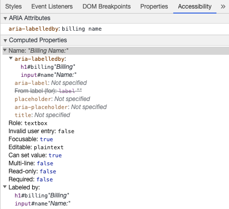

无障碍访问
Web 无障碍访问 (也称为 a11y) 是指创建可供任何人使用的网站的做法——无论是身患某种障碍、通过慢速的网络连接访问、使用老旧或损坏的硬件，还是仅处于某种不方便的环境。例如，在视频中添加字幕可以帮助失聪、有听力障碍或身处嘈杂环境而听不到手机的用户。同样地，确保文字样式没有处于太低的对比度，可以对低视力用户和在明亮的强光下使用手机的用户都有所帮助。
你是否已经准备开始却又无从下手？
请先阅读由万维网联盟 (W3C) 提供的 Web 无障碍访问的规划和管理。
跳过链接
你应该在每个页面的顶部添加一个直接指向主内容区域的链接，这样用户就可以跳过在多个网页上重复的内容。
通常这个链接会放在 App.vue 的顶部，这样它就会是所有页面上的第一个可聚焦元素：
<span ref="backToTop" tabindex="-1" />
<ul class="skip-links">
<li>
<a href="#main" ref="skipLink" class="skip-link">Skip to main content</a>
</li>
</ul>若想在非聚焦状态下隐藏该链接，可以添加以下样式：
.skip-links {
list-style: none;
}
.skip-link {
white-space: nowrap;
margin: 1em auto;
top: 0;
position: fixed;
left: 50%;
margin-left: -72px;
opacity: 0;
}
.skip-link:focus {
opacity: 1;
background-color: white;
padding: 0.5em;
border: 1px solid black;
}一旦用户改变路由，就应将焦点置回页面最开始，即跳过链接之前。这可以通过调用 backToTop 模板引用的 focus 实现 (假设使用了 vue-router)：
<script setup>
import { ref, watch } from 'vue'
import { useRoute } from 'vue-router'
const route = useRoute()
const backToTop = ref()
watch(
() => route.path,
() => {
backToTop.value.focus()
}
)
</script>内容结构
确保设计可以支持易于访问的实现是无障碍访问最重要的部分之一。设计不仅要考虑颜色对比度、字体选择、文本大小和语言，还要考虑应用中的内容是如何组织的。
标题
用户可以通过标题在应用中进行导航。为应用的每个部分设置描述性标题，这可以让用户更容易地预测每个部分的内容。说到标题，有几个推荐的无障碍访问实践：
- 按级别顺序嵌套标题：
<h1>-<h6> - 不要在一个章节内跳跃标题的级别
- 使用实际的标题标记，而不是通过对文本设置样式以提供视觉上的标题
<main role="main" aria-labelledby="main-title">
<h1 id="main-title">Main title</h1>
<section aria-labelledby="section-title-1">
<h2 id="section-title-1"> Section Title </h2>
<h3>Section Subtitle</h3>
<!-- 内容 -->
</section>
<section aria-labelledby="section-title-2">
<h2 id="section-title-2"> Section Title </h2>
<h3>Section Subtitle</h3>
<!-- 内容 -->
<h3>Section Subtitle</h3>
<!-- 内容 -->
</section>
</main>Landmarks
Landmark 会为应用中的章节提供访问规划。依赖辅助技术的用户可以跳过内容直接导航到应用的每个部分。你可以使用 ARIA role 帮助你实现这个目标。
| HTML | ARIA Role | 地标的目的 |
|---|---|---|
| header | role="banner" | 主标题：页面的标题 |
| nav | role="navigation" | 适合用作文档或相关文档导航的链接集合 |
| main | role="main" | 文档的主体或中心内容 |
| footer | role="contentinfo" | 关于父级文档的信息：脚注/版权/隐私声明链接 |
| aside | role="complementary" | 用来支持主内容，同时其自身的内容是相对独立且有意义的 |
| search | role="search" | 该章节包含整个应用的搜索功能 |
| form | role="form" | 表单相关元素的集合 |
| section | role="region" | 相关的且用户可能会导航至此的内容。必须为该元素提供 label |
语义化表单
当创建一个表单，你可能使用到以下几个元素：<form>、<label>、<input>、<textarea> 和 <button>。
标签通常放置在表格字段的顶部或左侧：
<form action="/dataCollectionLocation" method="post" autocomplete="on">
<div v-for="item in formItems" :key="item.id" class="form-item">
<label :for="item.id">{{ item.label }}: </label>
<input
:type="item.type"
:id="item.id"
:name="item.id"
v-model="item.value"
/>
</div>
<button type="submit">Submit</button>
</form>请注意这里我们是如何在表单元素中引入 autocomplete='on' 的，它将应用于表单中的所有 input 框。你也可以为每个 input 框都设置不同的 autocomplete attribute 的值。
标签
提供标签来描述所有表单控件的用途；使 for 和 id 链接起来：
<label for="name">Name: </label>
<input type="text" name="name" id="name" v-model="name" />如果你在 Chrome 开发者工具中检查这个元素，并打开 Elements 选项卡中的 Accessibility 选项卡，你将看到输入是如何从标签中获取其名称的：

警告：
你可能还见过这样的包装 input 框的标签：
<label>
Name：
<input type="text" name="name" id="name" v-model="name" />
</label>但我们仍建议你显式地为 input 元素设置 id 相匹配的标签，以更好地实现无障碍访问。
aria-label
你也可以为 input 框配置一个带有 aria-label 的无障碍访问名。
<label for="name">Name: </label>
<input
type="text"
name="name"
id="name"
v-model="name"
:aria-label="nameLabel"
/>在 Chrome DevTools 中审查此元素，查看无障碍名称是如何更改的：

aria-labelledby
使用 aria-labelledby 类似于 aria-label，除非标签文本在屏幕上可见。它通过 id 与其他元素配对，你可以链接多个 id：
<form
class="demo"
action="/dataCollectionLocation"
method="post"
autocomplete="on"
>
<h1 id="billing">Billing</h1>
<div class="form-item">
<label for="name">Name: </label>
<input
type="text"
name="name"
id="name"
v-model="name"
aria-labelledby="billing name"
/>
</div>
<button type="submit">Submit</button>
</form>
aria-describedby
aria-describedby 的用法与 aria-labelledby 相同，它提供了一条用户可能需要的附加描述信息。这可用于描述任何输入的标准：
<form
class="demo"
action="/dataCollectionLocation"
method="post"
autocomplete="on"
>
<h1 id="billing">Billing</h1>
<div class="form-item">
<label for="name">Full Name: </label>
<input
type="text"
name="name"
id="name"
v-model="name"
aria-labelledby="billing name"
aria-describedby="nameDescription"
/>
<p id="nameDescription">Please provide first and last name.</p>
</div>
<button type="submit">Submit</button>
</form>你可以通过使用 Chrome 开发者工具来查看说明：

占位符
避免使用占位符，因为它们可能会使许多用户感到困惑。
占位符的缺陷之一是默认情况下它们不符合颜色对比度标准；应当修改其颜色，让它看起来像是预先填入 input 框中的数据一样。查看以下示例，可以看到满足颜色对比度条件的姓氏占位符看起来像预填充的数据：

<form
class="demo"
action="/dataCollectionLocation"
method="post"
autocomplete="on"
>
<div v-for="item in formItems" :key="item.id" class="form-item">
<label :for="item.id">{{ item.label }}: </label>
<input
type="text"
:id="item.id"
:name="item.id"
v-model="item.value"
:placeholder="item.placeholder"
/>
</div>
<button type="submit">Submit</button>
</form>/* https://www.w3schools.com/howto/howto_css_placeholder.asp */
#lastName::placeholder {
/* Chrome, Firefox, Opera, Safari 10.1+ */
color: black;
opacity: 1; /* Firefox */
}
#lastName:-ms-input-placeholder {
/* Internet Explorer 10-11 */
color: black;
}
#lastName::-ms-input-placeholder {
/* Microsoft Edge */
color: black;
}最好在表单外提供所有用户需要填写输入的信息。
用法说明
添加用法说明时，请确保将其正确链接到目标 input 框。 你可以提供附加用法说明并在 aria-labelledby 内绑定多个 id。这可以使设计更加灵活。
<fieldset>
<legend>Using aria-labelledby</legend>
<label id="date-label" for="date">Current Date: </label>
<input
type="date"
name="date"
id="date"
aria-labelledby="date-label date-instructions"
/>
<p id="date-instructions">MM/DD/YYYY</p>
</fieldset>或者，你可以通过 aria-describedby 将用法说明附加到 input 框上。
<fieldset>
<legend>Using aria-describedby</legend>
<label id="dob" for="dob">Date of Birth: </label>
<input type="date" name="dob" id="dob" aria-describedby="dob-instructions" />
<p id="dob-instructions">MM/DD/YYYY</p>
</fieldset>隐藏内容
通常，即使 input 框具有无障碍的名称，也不建议在视觉上隐藏标签。但是，如果可以借助周围的内容来理解输入的功能，那么我们也可以隐藏视觉标签。
让我们看看这个搜索框：
<form role="search">
<label for="search" class="hidden-visually">Search: </label>
<input type="text" name="search" id="search" v-model="search" />
<button type="submit">Search</button>
</form>现在，只要视力情况良好，用户可以就能通过按钮的内容识别出该 input 框的目的。
此时我们可以使用 CSS 从视觉上隐藏元素，同时也不会影响到无障碍访问：
.hidden-visually {
position: absolute;
overflow: hidden;
white-space: nowrap;
margin: 0;
padding: 0;
height: 1px;
width: 1px;
clip: rect(0 0 0 0);
clip-path: inset(100%);
}aria-hidden="true"
添加 aria-hidden="true" 在无障碍访问时被隐藏，但对其他可视用户仍然是可见的。不要在可聚焦的元素上使用它，请只在装饰性的、重复的或屏幕外的内容上使用它。
<p>This is not hidden from screen readers.</p>
<p aria-hidden="true">This is hidden from screen readers.</p>按钮
在表单中使用按钮时，必须设置类型以防止提交表单。 你也可以使用一个 input 元素来创建按钮：
<form action="/dataCollectionLocation" method="post" autocomplete="on">
<!-- 按钮 -->
<button type="button">Cancel</button>
<button type="submit">Submit</button>
<!-- 输入按钮 -->
<input type="button" value="Cancel" />
<input type="submit" value="Submit" />
</form>功能图片
你可以使用这种方式来创建一个带有功能的图片。
input 框
- 这些图片会像一个类型为 submit 的表单按钮一样
template<form role="search"> <label for="search" class="hidden-visually">Search: </label> <input type="text" name="search" id="search" v-model="search" /> <input type="image" class="btnImg" src="https://img.icons8.com/search" alt="Search" /> </form>图标
<form role="search">
<label for="searchIcon" class="hidden-visually">Search: </label>
<input type="text" name="searchIcon" id="searchIcon" v-model="searchIcon" />
<button type="submit">
<i class="fas fa-search" aria-hidden="true"></i>
<span class="hidden-visually">Search</span>
</button>
</form>规范
万维网联盟 (W3C) Web 无障碍访问倡议 (WAI) 为不同的组件制定了 Web 无障碍性标准：
- 用户代理无障碍访问指南 (UAAG)
- 浏览器和媒体查询，包括一些其他方面的辅助技术
- 创作工具无障碍访问指南 (ATAG)
- 创作工具
- Web 内容无障碍访问指南 (WCAG)
- 网站内容 - 由开发者、创作工具和无障碍访问评估工具使用。
网络内容无障碍指南 (WCAG)
WCAG 2.1 继承自 WCAG 2.0，接纳 Web 演进过程中的新技术。W3C 鼓励在开发或更新 Web 无障碍访问策略时使用 WCAG 的最新版本。
WCAG 2.1 四大指导原则 (缩写 POUR)：
Web 无障碍倡议 – 无障碍访问丰富的互联网应用 (WAI-ARIA)
W3C 的 WAI-ARIA 为如何构建动态内容和高阶用户界面控件提供了指导。
资源
文档
- WCAG 2.0
- WCAG 2.1
- Accessible Rich Internet Applications (WAI-ARIA) 1.2
- WAI-ARIA Authoring Practices 1.2
辅助技术
测试
- 自动化相关的工具
- 颜色相关的工具
- 其他有用的工具
用户
世界卫生组织估计，全世界 15% 的人口患有某种形式的残疾，其中约 2 - 4% 的人严重残疾。估计全世界有 10 亿残障人士，他们是世界上最大的少数群体。
残疾的种类繁多，大致可分为以下四类：
- 视觉 - 可以为这些用户提供屏幕助读器、屏幕缩放、控制屏幕对比度或盲文显示等帮助。
- 听觉 - 可以为这些用户提供视频字幕、文字记录或手语视频。
- 运动能力 - 可以为这些用户提供一系列运动障碍辅助技术：比如语音识别软件、眼球跟踪、单刀式开关、超大轨迹球鼠标、自适应键盘等等。
- 认知能力 - 可以为这些用户提供补充媒体、更清晰和简单、更结构化的内容。
你可以查看以下来自 WebAim 的链接，更深入地了解这些用户的需求：